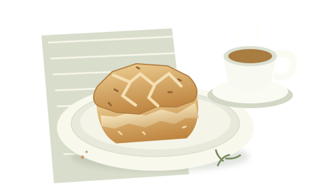

YOUR AFTERNOON PICKS
購物車
每一顆，都是一個小小的午後期待。
A LITTLE SOMETHING IS WAITING
購物車還是空的
從一顆原味司康開始吧。

原味司康
NT$100／顆 · 每筆最多 5 顆
數量
數量可調整為 0–5 顆；減至 0 即移除商品。
YOUR AFTERNOON PICKS
每一顆，都是一個小小的午後期待。
A LITTLE SOMETHING IS WAITING
從一顆原味司康開始吧。

NT$100／顆 · 每筆最多 5 顆
數量可調整為 0–5 顆；減至 0 即移除商品。